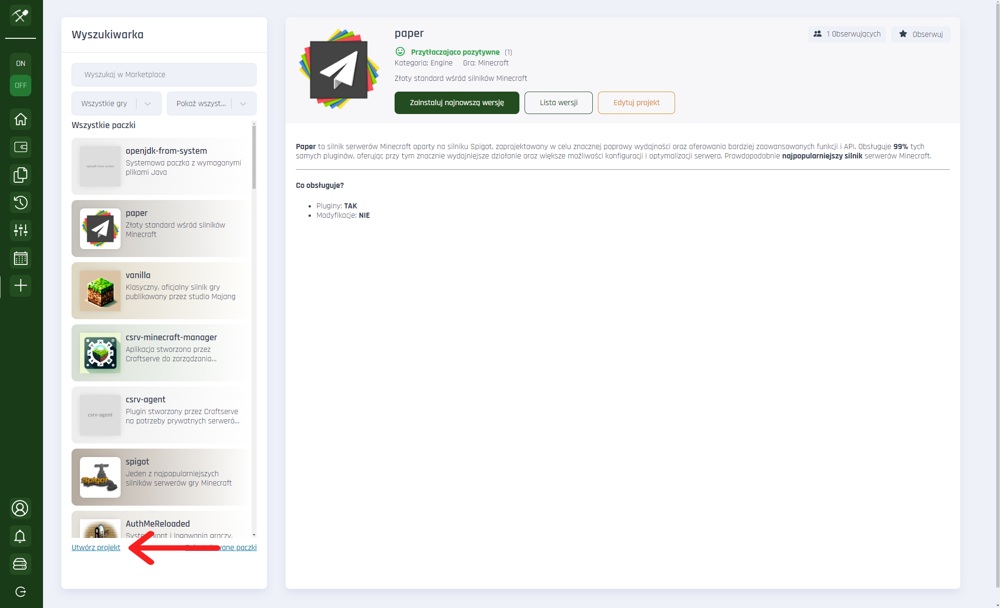
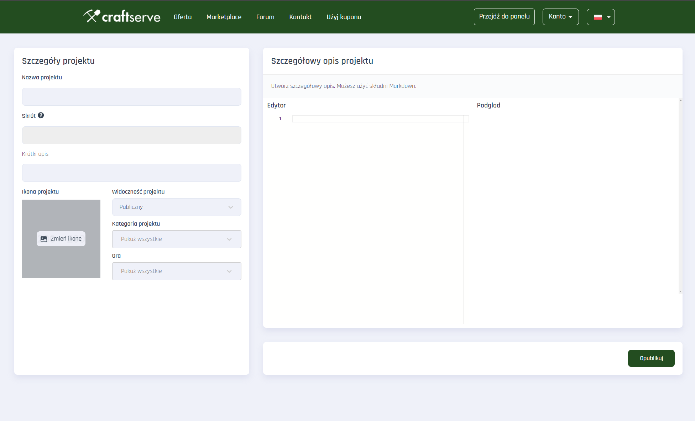
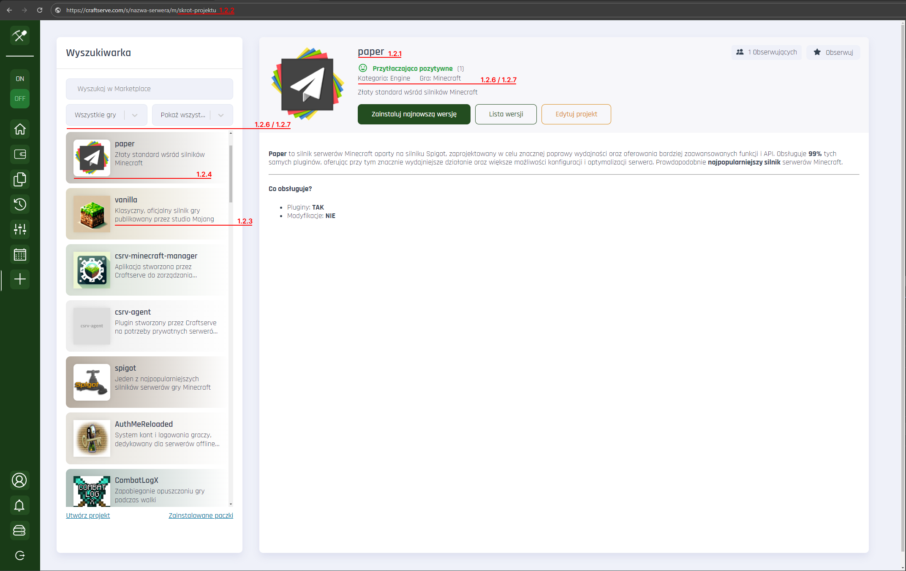

Marketplace
Jak stworzyć paczkę na Craftserve Marketplace?
Uwaga: Tworzenie projektów i wersji wymaga zakupionej usługi
1.1 Wejdź do panelu zarządzania serwerem, następnie w marketplace, oraz kliknij odnośnik “Utwórz projekt”

1.2 W kreatorze projektu wypełnij poszczególne pola

1.2.1 Nazwa projektu – Wyświetla się w marketplace, oraz dzięki temu polu użytkownicy będą mogli wyszukiwać Twój projekt po nazwie.
1.2.2 Skrót - te pole wypełnia się automatycznie względem nazwy którą wypełnisz, odpowiada ono za identyfikacje projektu w linku.
1.2.3 Krótki opis – To będzie druga rzecz którą zobaczy użytkownik szukając paczek w marketplace. Wyświetla się pod tytułem w liście paczek i to dzięki niemu możesz przyciągnąć kogoś uwagę. Powinien zawierać krótki opis na czym skupia się Twój projekt.
1.2.4 Ikona projektu - przyciąga uwagę i jest niejako wizytówką Twojej paczki!
1.2.5 Widoczność projektu
- Publiczny : Dostępny dla każdego, wyświetla się w liście paczek marketplace
- Niepubliczny : Nie wyświetla się w liście paczek marketplace, ale jest możliwy do udostępnienia przez link.
- Prywatny : Dostępny tylko dla Ciebie. *Jako autor projektu, zawsze będziesz widział swój projekt w liście projektów na marketplace. Bez względu jaką widoczność wybierzesz.
1.2.6 Kategoria projektu – powinna jak najbliżej precyzować czym jest Twoja paczka. Dzięki określeniu kategorii Twoja paczka będzie mogła być filtrowana po kategorii.
1.2.7 Gra - Określa do jakiej gry jest przeznaczona Twoja paczka.
1.2.8 Szczegółowy opis projektu – skorzystaj z edytora markdown, aby w pełni opisać swój projekt. Uwzględnij czego wymaga Twoja paczka, oraz na czym się skupia, lub jaki problem rozwiązuje. Jeśli nie wiesz dokładnie jak działa Markdown skorzystaj z https://www.markdownguide.org/cheat-sheet/

1.3 Gdy uzupełnisz swój projekt, kliknij przycisk “Opublikuj”, aby zatwierdzić zmiany.
1.4 Gotowe! Aby zobaczyć swój projekt wejdź na marketplace i wyszukaj go w wyszukiwarce.
1.5 Masz już swój projekt, ale brakuje w nim wersji, czyli brakuje dodanych plików do projektu, które zostaną pobrane w momencie gdy użytkownik będzie chciał ją zainstalować na swoim serwerze. Aby dodać wersję wejdź w swój projekt, następnie kliknij “Lista wersji”

1.6 Kliknij “Dodaj wersję”
1.7 Kreator wersji projektu składa się z następujących pól:
1.7.1 Typ wersji
- Stable oznacza wersję stabilną, która przeszła pełne testy. Jest ona skierowana do użytkowników którzy oczekują w pełni działającej paczki.
- Private oznacza, że wersja jest prywatna, skierowana dla danej grupy odbiorców np. Programistów, lub Twoich testerów. Nie musi być stabilna, może wymagać np. Dodatkowych testów.
- Latest to najnowsza wersja, może być stabilna lub nie. Kierowana dla użytkowników, którzy chcą najnowszych funkcji.
1.7.2 Wersja projektu np. Numer. To twoja decyzja jak oznaczasz swoje wersje.
1.7.3 Serwer – wybierz serwer z którego chcesz udostępnić pliki do paczki. Wybrane pliki zostaną zainstalowane na serwerze użytkownika, który zainstaluje Twoją paczkę.
1.7.4 Wybierz paczki , które mają zostać zainstalowane przed zainstalowaniem Twojej paczki. Wykrywamy automatycznie jakie paczki posiadasz zainstalowane na swoim serwerze z którego wgrywasz pliki. Zaznacz jeśli Twoja paczka wymaga do działania jakiejś innej paczki, lub silnika / wersji gry.
- Przykład : Moja paczka to mapa serwera z kilkoma dodatkowymi pluginami. Wiem, że moje pluginy wymagają silnika Paper na wersji 1.12.1. Dodatkowo chciałbym, aby wymagane od użytkownika była powyższa wersja, ponieważ jeśli będzie posiadał starszą to mapa może zostać źle wczytana. Wybieram więc:

Jeśli wiesz, że Twoje pliki wymagają przykładowo silnika spigot w wersji 1.21.1 to zaznacz spigot-api w wersji 1.21.1. Jeśli natomiast chcesz, aby zależność była weryfikowana razem z wersją builda wybierz opcję która kończy się "-" przykład: paper:1.12.1-97 Wymagane wtedy będzie, aby użytkownik posiadał paczkę spigot w wersji 1.21.1 o buildzie 97.
Gdy użytkownik będzie chciał zainstalować Twoją paczkę zostanie sprawdzona kompatybilność z jego serwerem względem tego jakie wymagania zaznaczysz.
1.7.5 Szczegółowy opis : Tutaj możesz opisać dokładnie czego wymaga Twoja wersja, oraz opisać co zmieniło się np. Względem starszej wersji. Pamiętaj, aby dokładnie uzupełniać swoje opisy.
1.7.6 Gdy wszystkie pola zostały uzupełnione, kliknij przycisk “ Dodaj wersję ”.
1.8 Wersja została utworzona i jest teraz dostępna do pobrania. Gratulacje!